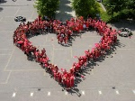

| Voor actuele informatie over VLOT! Campus STC kun je voortaan alleen nog terecht op onze VLOT!‑webstek via www.vlot‑stc.be. |
|  | Als je op zoek bent naar een leuke herinnering aan het Sint-Teresiacollege (Eksaarde) uit de periode 1998‑2018, bezoek dan zeker onze archiefpagina via archief.sint‑teresiacollege.be. |


|
© 1998-2018 Sint-Teresiacollege Eksaarde | Bezoekers:
|